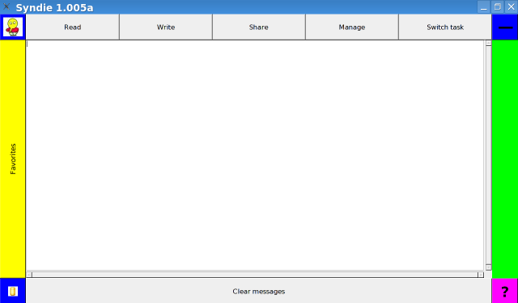
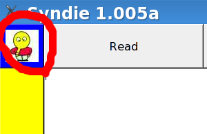
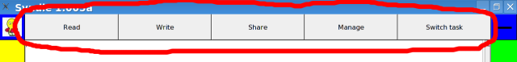
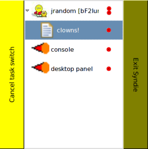
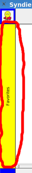
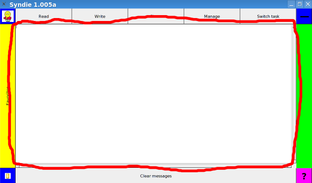
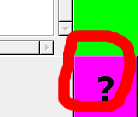

Syndie help - common elements, behaviors, and commands
up

The Syndie GUI has a number of common graphical elements:
There are also a number of common keyboard shortcuts available at all times:
- control + '=': increases the font size
- control + '-': decreases the font size
- alt + up arrow: switch to the previous panel
- alt + down arrow: switch to the next panel
- control + 'w': close the current panel
- alt + 'f': bring up the switch task popup
- F5: often refreshes the current panel, where appropriate
Control panel button

Simply put, hitting this button at any time will bring up the
Control panel. In addition, the image
shown on the button is the avatar for the current Syndie instance's
primary identity.
Top command button

This row of five buttons allows universal access to Syndie's
primary features.
- The read button brings up the
Forum selection panel, where
the user decides what forums they want to read.
- The write button brings up a new
Message editor panel
to create a new message, though if there are some postponed messages waiting,
it will instead direct the user to the
Message resume panel.
- The share
button brings the user to the Share panel, where
they specify what remote archives they want to share messages with and when.
It is critical for the share panel to be used properly, as otherwise the user
will not have any messages to read an no one will read their posts.
- The manage button brings up the
Forum selection panel as well, though
this time the list of forums to choose from is limited to the forums that the user
can manage. The user can then select the desired forum, bringing up that forum's
Thread tree panel, and then select the profile
button to manage the forum.
- The switch task button brings up a popup dialog letting users easily switch
between the different open panels:

This dialog offers five basic options - cancel the task switch by hitting the left hand
button, switch to any of the listed panels by double clicking on any of the items,
close an individual panel by clicking on the single red circle next to the item's name,
close a group of related panels by clicking on the double red circle next to the parent
item's name, and exiting Syndie altogether by clicking on the right hand button.
Minimize button

This button simply offers a nice and big target to hit to make Syndie go off into
the background.
Favorites button

The favorites button serves two purposes. First, hitting it toggles the display
of the Forum selection panel. Second, it
serves as a huge drag and drop target where you can drag forums and messages that you
want to add to your watched list.
Panel body

Each panel does the bulk of its work in the center of Syndie's screen - in the
body
Help button

The help button will pull up the context sensitive help for the current panel.